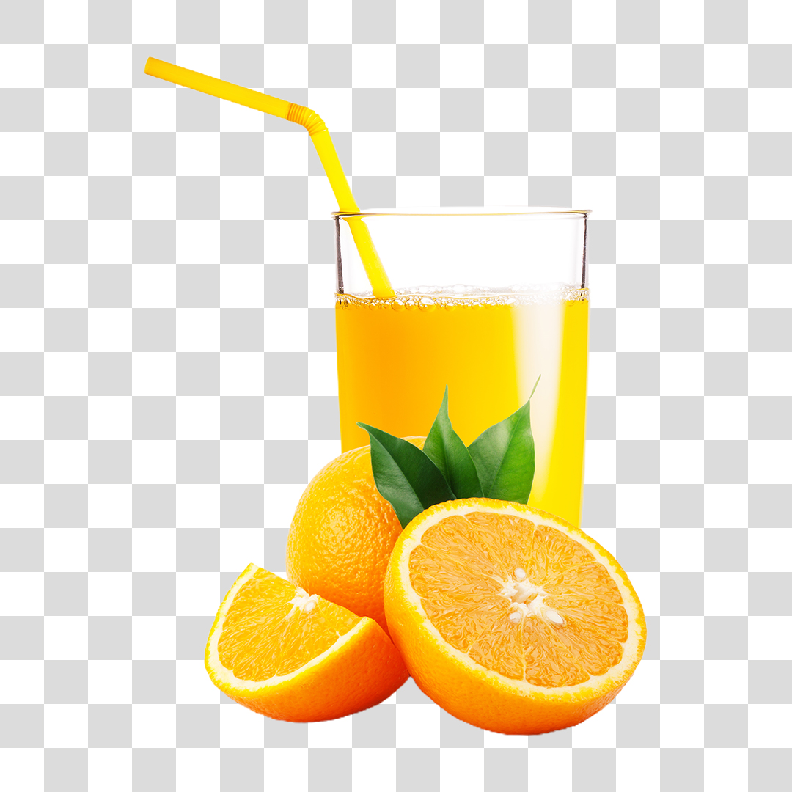

Suco de Laranja
| Dificuldade |
Porções |
Tempo de Preparo |
| Fácil |
10 pessoas |
5 - 10 minutos |

Ingredientes
- 5 Laranjas
- 1 litro de água
- Açúcar (se preferir)
Modo de Preparo
- Corte as laranjas ao meio
- Retire o suco com o auxilio de um expremedor
- Adicione a água
- Adicione o açúcar a gosto
- Misture tudo muito bem
- Sirva-se a vontade